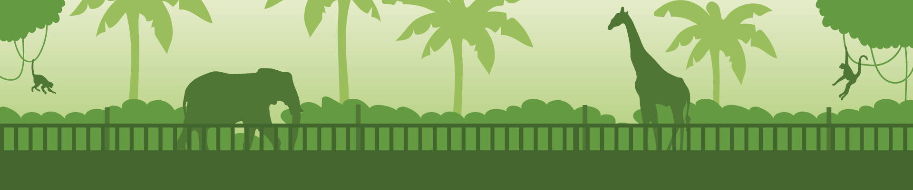

Životinja: Riba klovn
Naučno ime: Amphiprioninae
Životni vek: 3 – 10 godina
Dužina: 10 cm
Porodica: Pomacentridae
Masa: 250 g
Malo koja riba pleni pažnju kao riba klovn. Mnogima je simpatična zbog
svojih jarkih šara nalik bojama na licu cirkuskog klovna. Kod nje je
zanimljivo i to što za stanište bira otrovne pipke morske sase. Iz tog
razloga je dobila još jedan naziv — riba sasa.

Ribe
Životinja: Pirana
Naučno ime: Pygocentrus nattereri
Životni vek: 10 godina
Dužina: 50 cm
Porodica: Characidae
Masa: 4 - 5 kg
Pirana ima oko 60 vrsta. Većina vrsta su lešinari ili se hrane biljkama.Većina vrsta pirana ne naraste više od 60 cm. Njihove boje variraju od plavkasto srebrne s narančastim prelivima na donjem delu trupa do gotovo potpuno crne. Svim vrstama pirana zajedničke su karakteristike listoliko telo, oštra trbušna peraja i velika tupa glava s jakim vilicama u kojima su oštri trouglasti zubi
Naučno ime: Pygocentrus nattereri
Životni vek: 10 godina
Dužina: 50 cm
Porodica: Characidae
Masa: 4 - 5 kg
Pirana ima oko 60 vrsta. Većina vrsta su lešinari ili se hrane biljkama.Većina vrsta pirana ne naraste više od 60 cm. Njihove boje variraju od plavkasto srebrne s narančastim prelivima na donjem delu trupa do gotovo potpuno crne. Svim vrstama pirana zajedničke su karakteristike listoliko telo, oštra trbušna peraja i velika tupa glava s jakim vilicama u kojima su oštri trouglasti zubi
Životinja: Riba list
Naučno ime: Monocirrhus polyacanthus
Životni vek: 8 – 9 godina
Dužina: 50 cm
Porodica: Polycentridae
Masa: 1 kg
Živi u priobalnom muljevitom i peskovitom dnu u Jadranskom i Sredozemnom moru i istočnom delu Atlantika. Može se naći i na ušćima reka (Neretva). Oči kao i kod ostalih vrsta - ima samo na jednoj strani tela. Na boku sa očima je smeđozelenkaste ili sivkaste boje, nepravilno izmrljana tamnom bojom. Na vrhu prsnog peraja ima crnkastu mrlju, a na slepoj strani je beličaste boje. Naraste i do 50 cm u dužinu, a težine može biti i do jednog kilograma.
Naučno ime: Monocirrhus polyacanthus
Životni vek: 8 – 9 godina
Dužina: 50 cm
Porodica: Polycentridae
Masa: 1 kg
Živi u priobalnom muljevitom i peskovitom dnu u Jadranskom i Sredozemnom moru i istočnom delu Atlantika. Može se naći i na ušćima reka (Neretva). Oči kao i kod ostalih vrsta - ima samo na jednoj strani tela. Na boku sa očima je smeđozelenkaste ili sivkaste boje, nepravilno izmrljana tamnom bojom. Na vrhu prsnog peraja ima crnkastu mrlju, a na slepoj strani je beličaste boje. Naraste i do 50 cm u dužinu, a težine može biti i do jednog kilograma.